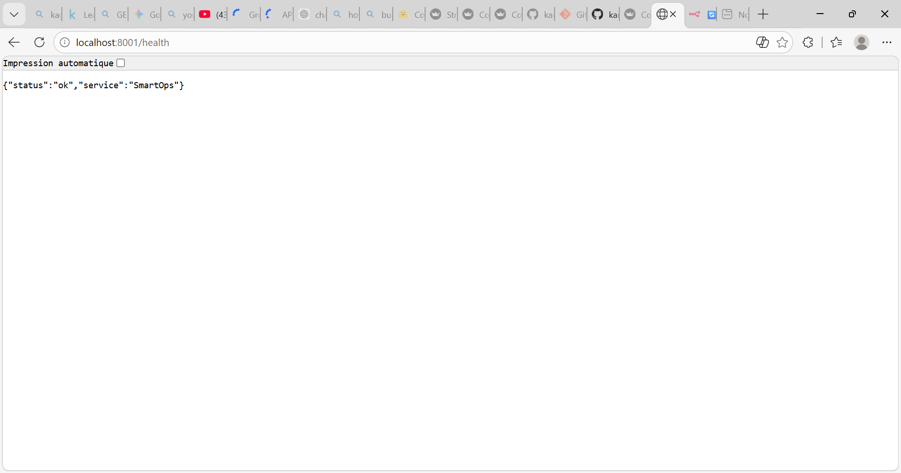
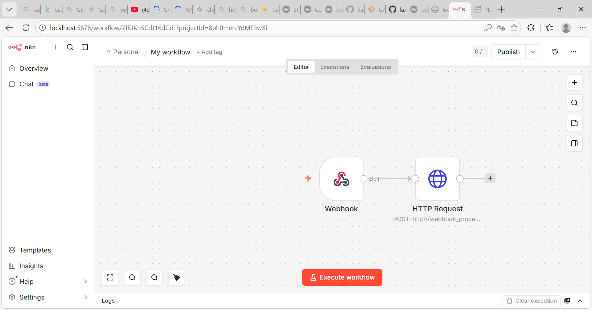
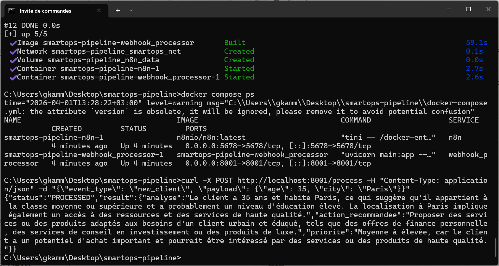

Gestion d'Aérodrome & Monitoring
"Optimisation de la gestion opérationnelle et suivi en temps réel des infrastructures aéroportuaires."
Conception d'un tableau de bord interactif permettant le monitoring des flux et la visualisation des KPIs critiques. Ce projet démontre ma capacité à structurer des données complexes pour faciliter la prise de décision rapide dans un environnement exigeant.


Audit Intelligent (RAG Cosmétique)
"Automatisation de la conformité réglementaire par l'Intelligence Artificielle sémantique."
Développement d'un moteur RAG (Retrieval-Augmented Generation) utilisant TF-IDF et l'API Groq (Llama 3.3) pour analyser 1472 produits. Le système transforme des requêtes en langage naturel en rapports JSON structurés, réduisant drastiquement le temps d'audit.


SmartOps Pipeline
"Orchestration de workflows intelligents et déploiement de micro-services conteneurisés."
Mise en place d'un pipeline d'automatisation complet avec n8n et Docker. Ce projet intègre un micro-service FastAPI qui enrichit les flux via un LLM pour générer des recommandations d'actions automatiques et structurées.


